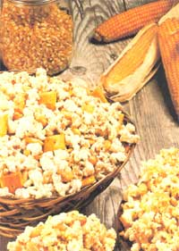
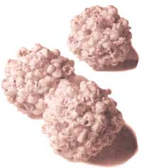
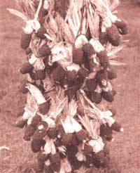

GARDEN & YARD
Sweet corn is terrific when eaten fresh, field corn is good for feeding livestock, and Indian corn is great for popping. Indian corn? That's right. Popcorn was one of those fabulous foods that the Pilgrims learned about from the Native Americans, who grew over 700 varieties with kernels ranging in color from white to golden, red to black, and all colors in between.
Archaeologists believe popcorn was the first corn ever enjoyed by humans. Columbus "discovered" it when he landed on the Caribbean island of San Salvador. Today, you can buy gourmet popcorn left on the cob, packed in wine bottles, or packaged for the microwave. As much fun as it is to eat, popcorn is twice as much fun if you grow it yourself.
Selecting Seed
Classified as Zea mays, corn is actually a grass. Sweet corn is botanically known as Zea mays rugosa. Popcorn is Zea mays praecox and comes in over 100 different strains varying in flavor, tenderness, presence, or absence of a hull, shape, and color. Despite the wide selection and varied kernel colors, all corn is white once it is popped. (Don't let the commercial cheese fool you.)
The two most popular strains are "snowflake" and "mushroom." Snowflake pops big and puffy and is the kind you'll munch at the movies or pop at home; mushroom pops small and round and is preferred by commercial makers of caramel corn because it doesn't break as easily. You aren't likely to find mushroom seeds for growing, but no matter. Since you wouldn't process your homegrown corn by machine, snowflake works fine. It's also the more tender of the two.
One of the first things that you'll have to decide when you grow your own is whether to plant a hybrid or natural, open-pollinated variety. If you plan to save your own seed from year to year, choose one of the latter. Popular open-pollinated varieties are Strawberry (which has small ears with red kernels), Tom Thumb (a fast-growing dwarf requiring little space), and Japanese Hulless (which has 4" ears with kernels that pop quite tender). White Cloud, a hybrid, produces fewer ears than open-pollinated varieties, but many feel that it pops better.
Planting
Young corn shoots are highly susceptible to frost damage, so plant seeds after all danger of frost has passed. Select a sunny spot that's protected from the wind. Since corn likes lots of nitrogen, it does well where a legume, such as beans or peas, were grown the previous year. Seeds germinate best after the soil has warmed to at least 60°F. Plant kernels ½" deep in spring; during the heat of summer, plant seeds 2" deep. Germination occurs in three to 12 days.
Plant rows 12" apart. Since good ear development depends on good pollination, put in four or more adjacent rows. If you don't have room for several rows, plant in hills. Typically, only about 75% of the seeds germinate, so put two kernels in each hole and space the holes 7" apart. Thin later so that the best sprouts are 15" apart. For hills, plant six kernels per hill, thinning to three after they sprout. To avoid damaging roots of adjoining plants, thin by cutting rather than pulling.
If you plan to save your own seed, isolate popcorn from other kinds of corn (including other varieties of popcorn) to avoid cross-pollination. You can isolate varieties by planting them 500 feet apart or by staggering plantings so stalks tassel at least two weeks apart. You should know, too, that your popcorn patch can interfere with someone's nearby sweet corn, so plant your corn where it won't start neighborhood feuds.
Corn will only develop a full set of kernels if pollination is complete. You can make sure this happens.
Since corn doesn't grow well in competition with weeds, either keep weeds hoed back (taking care not to damage tender corn roots) or mulch heavily. If rainfall doesn't provide 1" of water per week, particularly when stalks begin to tassel, water by flooding the ground rather than by using overhead sprinklers; you don't want to wash away the pollen. Apply compost or other nitrogen fertilizer when sprouts are 6" high and again when they reach knee height.
Two enemy pests of corn are corn borers and earworms. Borers attack stalks, kicking "sawdust" out through small holes. If you find one at work, destroy it by squeezing the stalk; otherwise, apply the biological pesticides rotenone or Bacillus thuringiensis (BT). Earworms typically attack ear tips when stalks begin to tassel. Deal with them by sprinkling the tip of each ear with rotenone, BT, or pyrethrin before silks wither and begin to brown. After silks turn brown, apply a drop of mineral oil to the top of each ear.
Unfortunately there are two animals that love popcorn as much as humans do: crows and raccoons. Crows go after young sprouts-pulling them up as fast as they peep through the soil to get at the sweet kernel below. One solution, of course, is to put a scarecrow on the job. Another is to mulch your corn patch so that, by the time sprouts poke through the mulch, the seed kernels will have lost their sweet appeal. If you plant in hills, a third crow deterrent is to set up a tepee of three sticks at the center of each hill.
Raccoons go after corn ears just as they're starting to ripen. An electric fence will keep them out. Sprinkling a little hot pepper on the silk of each ear will slow them down. Turning a flood light on the corn patch, or piping radio sounds to it, send the nocturnal raiders scurrying for a more sensible garden. The Native American practice of planting pumpkins among corn also discourages masked bandits-some theorize that raccoons don't like the prickly stems, others say the big pumpkin leaves prevent them from looking around while they're busy munching fresh ears. Who cares the reason, so long as it works.
Pollination
Typically, one to two ears will grow on each corn stalk, but they will develop a full set of kernels only if pollination is complete. Every corn plant has both male and female flowers. The male flowers are the tassels at the top of the stalks. The female flowers are the ears. The silk on the ears must be pollinated by the tassels in order for the corn kernels to develop. Each pollinated strand of silk represents one kernel on the cob.
To ensure good pollination, after tassels open to display their yellow pollen, walk along on a calm morning and shake stalks to make the tassels release their bounty. If you prefer a more precise method, shake pollen from several tassels into a bucket or large paper bag. Transfer the pollen into an easier-to-handle smaller bag and sprinkle a little onto each silky ear. Ensure complete pollination by repeating the process on three different days.
If you plan to save seed to plant next year, but nearby corn crops interfere with your own seed crop, protect ears with waxed bags and hand-pollinate them. In his fine book Saving Seeds (Storey Publishing; 1990), Marc Rogers recommends this procedure for hand pollination: When the tassels at the top of the plants develop pollen, cut one off. Remove the bag from an ear and rub the tassel on the silk. Continue on to other bagged ears until the tassel runs low on pollen. Cut another tassel and continue until all bagged ears have been pollinated.
After the silk turns brown, remove the bags and identify the hand-pollinated ears by tying pieces of colorful yarn around them so they won't accidentally get popped for eating. Save at least a dozen ears in this manner, so you'll have plenty of choice in selecting the best seed to plant next year. Since corn kernels do not store well, grow a fresh batch of seed each year.
Harvest
Leave corn drying on the stalks until the first hard frost threatens. When frost approaches, or if the weather is too damp, bring the ears of corn in and dry them under cover by stripping back the husks and tying a few together in a bunch. When the weather cooperates, dry ears right on the stalks and pick them when the husks have partially dried and turn brown. Kernels are ready for storage when they can easily be twisted or rubbed from the cob.
Shelling popcorn can be hard on your hands. Most people grasp a cob and twist the kernels loose. Those same people complain about all of the blisters they got from doing this. I find it easier to rub them off with my thumbs, starting at the large end of the ear. Another trick is to rub two ears against each other to break kernels loose from the cobs. No matter which shelling method you prefer, toss out immature kernels near the tip of the ear.
Popcorn Pow-Wow
The Native Americans developed many ingenious ways to pop corn. One was to skewer an ear on a stick, roast it over an open fire, and gather up kernels that flew away from the flames. Another method was to clear away an area of soil made hot by a fire, then toss on some kernels. A third method was to heat a clay bowl lined with coarse sand, stir kernels in when the sand got hot, and eat those that popped to the surface.
Today corn is popped in an electric popper, in a heavy pan on the stove, or in the microwave-with or without oil. Dry-popped corn contains virtually no fat. Popped in oil, each cup contains about one gram of fat. If you grew up on corn popped in oil, as I did, dry-popped corn tastes flat.
Despite all the corn popping appliances I've been given over the years, I still prefer the stove-top method I learned from my mother. I fondly remember how she used to pop me a big bag of corn to enjoy at school. The popcorn was great, but I soon grew tired of being mobbed by classmates at recess. Mom also popped a batch every week right before "Maverick" came on TV. One week she was busy and forgot. When Maverick's theme song started, the whole family turned in unison to ask, "Where's the popcorn?"
To pop corn on the stove, you need a heavy saucepan with a loose fitting lid that lets steam escape. Heat the saucepan on a burner and add ¼ cup of oil- preferably one that's low in saturated fats, such as corn oil or sunflower oil. (Don't add salt to the oil or your corn will be tough.) Heat the oil to between 400°F and 460°F, where corn pops best. Oil burns at 500°F. If it smokes, it's too hot. Don't use butter-it will burn for sure.
Test the temperature of the oil by tossing in a few kernels. The oil is ready when the kernels pop. Pour in enough kernels to cover the bottom of the pan (if you add more than one layer, the expanding corn will pop the lid right off the pan). Two tablespoons of kernels make about one quart of popcorn. Shake the pan to keep kernels from burning and to coat each with oil. Your corn is done when the explosive sounds peak.
Even though I love stove-top popcorn, I think the Native Americans were onto something by popping it over an open fire. Fireplace (or campfire) popping makes the tastiest corn, although it also toasts you and wears out your popping arm.
You'll need a long-handled metal basket, available at old-fashioned hardware stores and modern fireplace accessory boutiques. Put ¼ to 1/3 cup of kernels into the basket. Hold the basket over the flame, high enough so the kernels won't burn before they pop, and shake the handle to keep the kernels moving inside the basket. It's nice to have a partner who'll take turns while you cool off and rest your arm.
If you can't find a long-handled popper, you can pop corn over a campfire using heavy aluminum foil. Tear the foil into 12" squares, one per serving. On each square, place one teaspoon of oil and one tablespoon of kernels. Bring the four corners of each square together at the center and twist them to form a loosely sealed packet. Leave the packets on a hot grill until the popping sound slows.
Corn can also be popped, Native American-style, right on the cob-something like roasting a hot dog. Some kernels will pop into the flames and be lost, some will pop away from the fire, and some will stick to the cob. As charming as it may be to pop corn this way, corn popped on the cob is usually not as tender as corn popped off the cob.
The Native Americans developed ingenious ways to pop corn, such as roasting it over an open fire.
Why It Pops
What makes corn pop? Popcorn kernels contain at least 14% water. Under heat, the water expands into steam, causing the starchy interior of the kernel to explode. When moisture in the kernel falls below 12%, you get duds, old maids, or spinsters-those unopened and partially opened kernels that rattle your jawbone and crack your teeth. Good popcorn should yield less than 2% spinsters. Microwave popcorn is dryer than other corn and usually has more spinsters than average. To avoid dried-out kernels, store popcorn in an airtight jar or plastic bag in a cool place. Avoid storing it in the refrigerator-the dry air in a refrigerator causes kernels to dry out quickly.
If you get a batch of corn that's too dry to pop, rejuvenate it by putting it into a jar and adding a little water. Screw on the lid and shake the jar occasionally until all of the water is absorbed. After two or three days, pop a batch. If you still get too many duds, add a little more water and try again.
As good as popcorn tastes, the surprising thing is that it's also good for you. It consists chiefly of complex carbohydrates. One cup contains only about 30 calories (add another 100 if you drizzle butter on it). Among the infamous food groups, popcorn qualifies as a cereal grain. Thanks to its hulls, it contains about one gram of dietary fiber. In fiber content, popcorn rivals bran flakes and whole-wheat toast- but it's a whole lot more fun to eat.
Pop-Happy
Since the proof of the popping is in the eating, it's no wonder popcorn is so popular. Each of us pops down 60 quarts per year. Are you popping your fair share?
Nacho-Cheese Popcorn
The American Popcorn Association (401 N. Michigan Avenue, Chicago, IL 60611) distributes imaginative recipes from Caramel Nut Crunch to Popcorn Peanut Soup. Here's one of my favorites:
1/3 cup cooking oil
1/3 cup popping corn
3 to 4 dried chilies
3 tablespoons hot oil
1 clove garlic, quartered
1/3 cup Parmesan cheese
1 teaspoon cumin seed
1 teaspoon paprika
½ teaspoon salt
In a small saucepan over low heat, warm oil, chilies, garlic, and cumin seed for three minutes; strain. Pop corn in three tablespoons of seasoned oil. Pour remaining oil over popped corn and toss to season. Combine Parmesan, paprika, and salt Toss with popped corn. Yield: 2½ quarts
Herbed Mustard Butter
The Popcorn Lover's Book (Contemporary Books, 1983) by popcorn mavens Sue Spitler and Nao Hauser, contains over unique 100 serving ideas. This 90-page book includes seven different kinds of flavored butter recipes such as this one:
3 to 4 tablespoons butter
1 teaspoon soy sauce
1 tablespoon Dijon mustard
¼ teaspoon lemon juice
¼ teaspoon dried rosemary leaves
Melt butter in a small saucepan; stir in remaining ingredients. Toss with popped corn. Yield: ¼ cup
Oriental Popcorn Mix
For this recipe, also from The Popcorn Lover's Book, Spitler and Hauser recommend popping the corn in sesame oil to give it a slightly nutty taste that goes well with soy sauce and 5-spice powder.
6 cups popped corn
3 tablespoons butter/margarine
5 ounces chow meim noodles
1 tablespoon soy sauce
1 cup cashews
½ teaspoon 5-spice powder
In a large bowl, combine popped corn, chow mein noodles, and cashews. In a small saucepan, melt butter and stir in soy sauce and 5-spice powder. Toss with corn and noodles. Yield: 9 cups
Sources:
The following mail-order catalogs carry popcorn seed for planting:
Johnny's Selected Seeds, Foss Hill Road, Albion, ME 04910; 207/437-9294.
Seeds Blum, Idaho City Stage, Boise, ID 83706; 208/342-0858
Stokes Seeds Inc., Box 548, Buffalo, NY 14240; 416/688-4300.
|
 old-fashioned balls |
 Some popcorn favorites: Strawberry |
 |